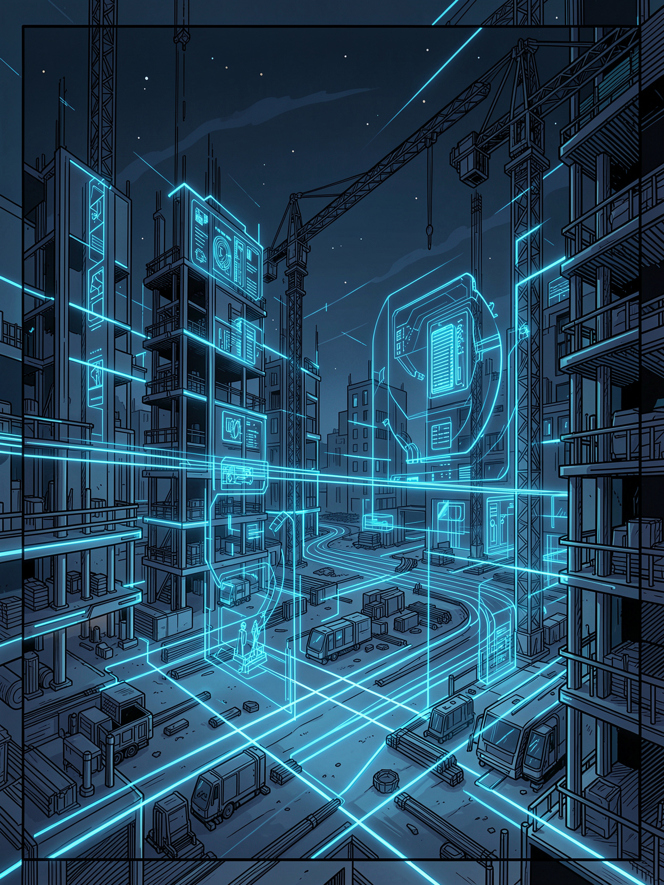
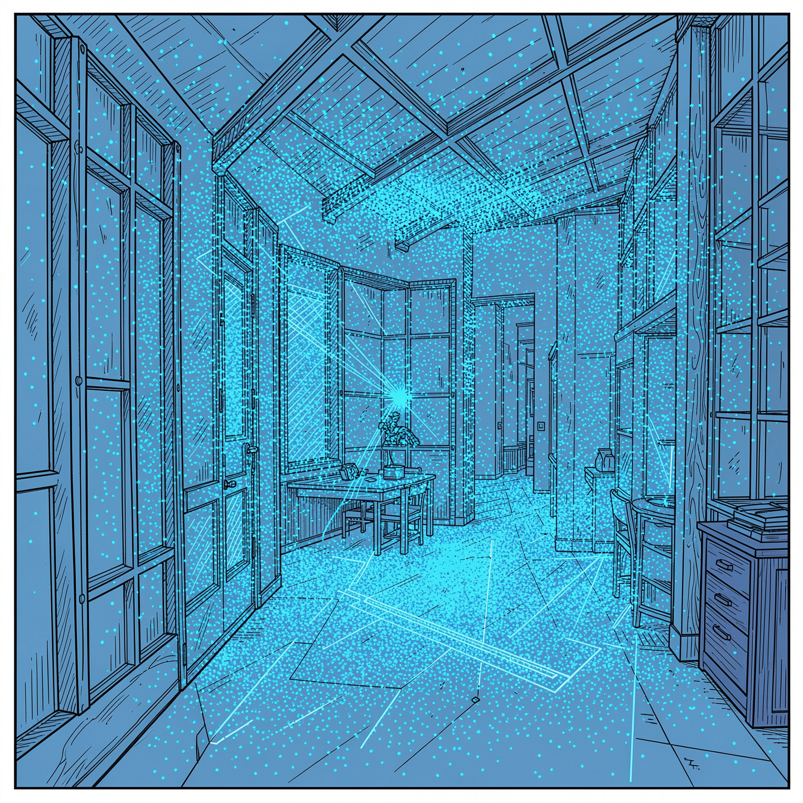
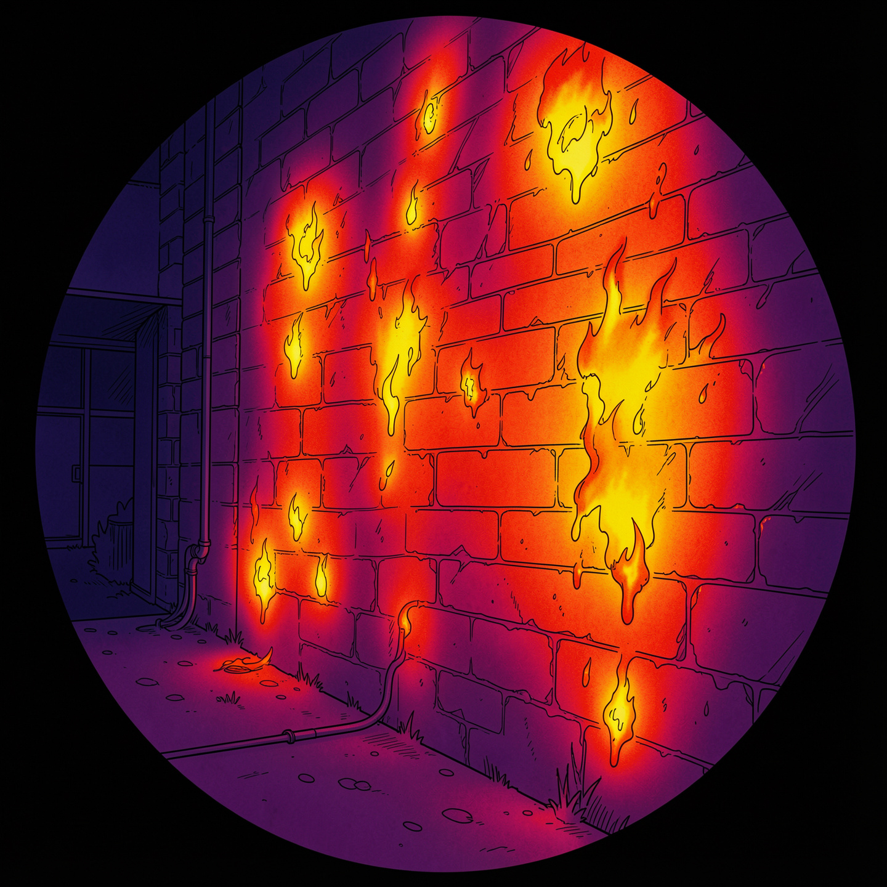
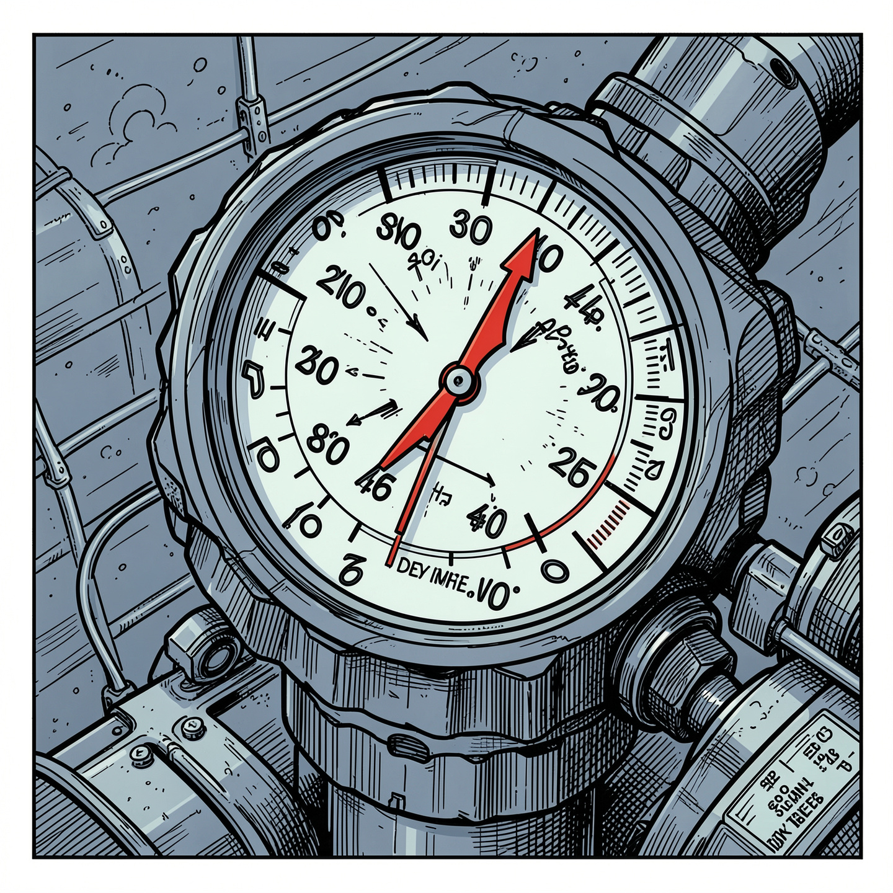
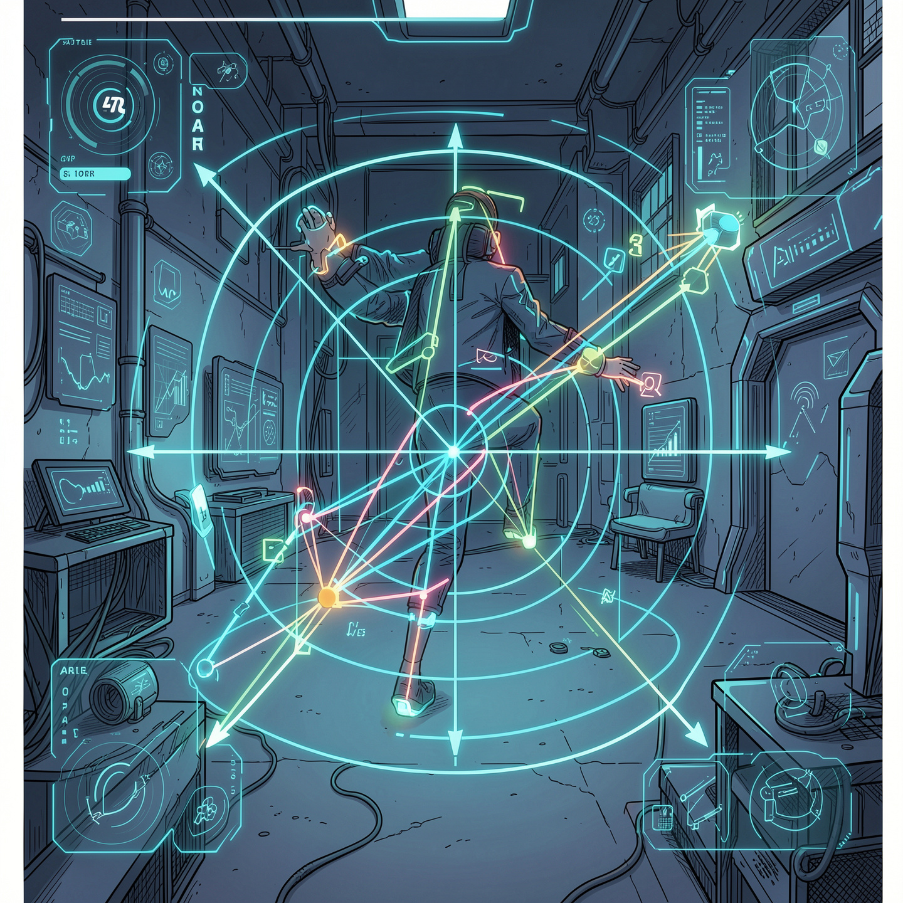

AI for real-time quality control and margin protection on construction sites.

10–15% of project cost is spent on late rework. When defects are found after the fact, remediation is expensive.
Office-based oversight is delayed and lacks full site visibility.
Detects deviations from design documentation at an early stage.
Provides concise status updates and voice assistance on site.
SaaS delivery with immediate value, no work stoppage, minimal training.
International patent application under the PCT route. Coverage in 150+ countries.
Ukrainian patent application for core system methods and computer vision algorithms.
Ukrainian utility model application for the physical device architecture and integrated sensor array.
Registered copyright for the book and source code.
Trademark application for SeeBuild.

Active spatial scanning. Generates 3D point clouds and vector models for comparison with CAD/BIM references.

Infrared sensing for non-destructive detection of insulation defects and operation in any lighting condition.

Compensates indoor GPS loss using differential air-pressure analysis for stable height measurement.

Calculates coordinate transforms in six degrees of freedom to align sensor data with the digital model.
Sensor array
AR CAD/BIM analysis
Anomaly detection
Voice interface
Monthly fee per active project. Recurring ARR from day one.
Monetized anonymized process data for insurance and financial risk assessment.
Patent sale to market leaders. Protected in 150+ countries.
"SeeBuild: Engineering Mindset on the Construction Site"